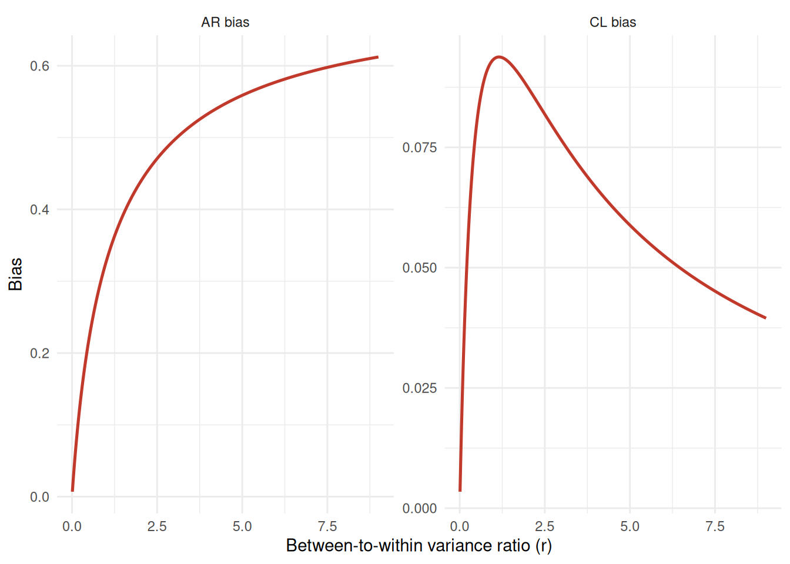
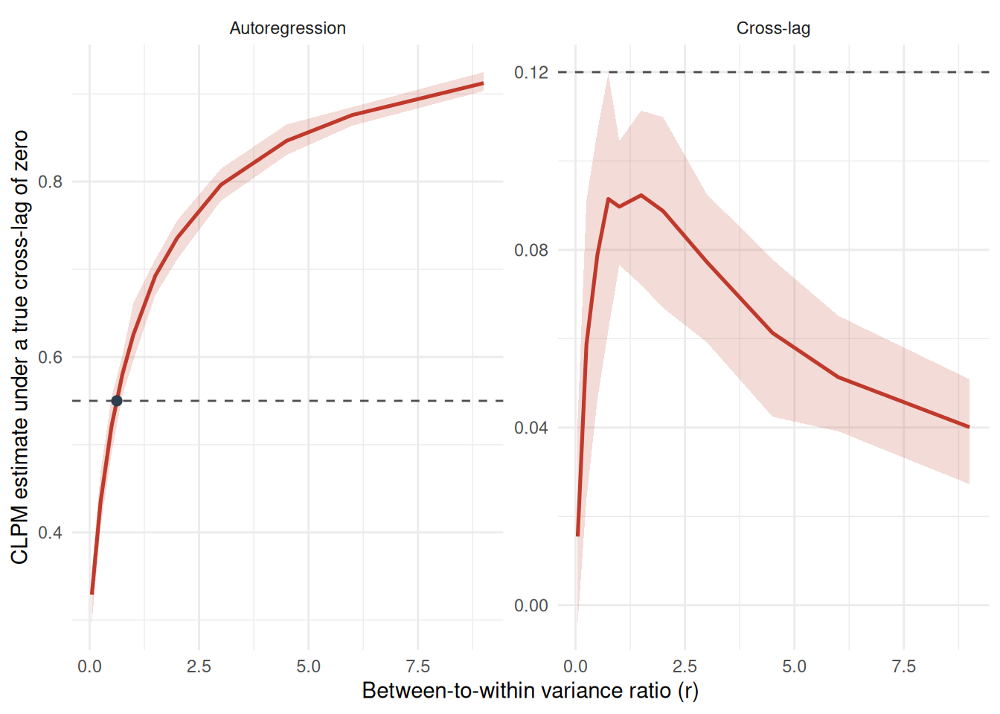

Omega <- r_true * matrix(c(1, rho_I, rho_I, 1), 2)
S <- Omega + diag(2)
V <- Omega %*% solve(S)
bias <- (diag(2) - b_true * diag(2)) %*% V
c(matrix_ar = bias[1, 1], matrix_cl = bias[1, 2]) matrix_ar matrix_cl
0.39230769 0.09230769 If all we know are the CL and AR parameters (from a CLPM), the direction and the magnitude of the bias brought about by trait variance is unknown.
We could work with the information available. One way is to assume a trait correlation \(\rho_I\) and then solve for the true autoregression \(b\) and the between-to-within variance ratio \(r\) that would produce the reported estimates (when the true parameter cross lagged parameter is zero). Another is to simply assume the true AR and CL parameters are incorrect, produced by a non-zero trait variances and covariances. This is produced near the end of the chapter, and turns the problem on its head. We can assume the AR and CL parameters are wrong, the AR is a mixture of the true AR and the trait correlation, and if we assume a priori a trait correlation \(\rho_I\), we can solve for the implied AR, CL and the between-to-within variance ratio \(r\) that would produce the reported estimates. The chapter shows that these two approaches are equivalent, sides of the same coin, and interchangeable.
Recall the bias function from Chapter 3. \[ \hat{\mathbf B}^{\text{CLPM}} = \mathbf B^{\text{true}} + \bigl(\mathbf I - \mathbf B^{\text{true}}\bigr)\,\mathbf V, \qquad \mathbf V \equiv \boldsymbol\Omega\,\mathbf S^{-1}, \]
For a review:
| Matrix | Description | From | Code |
|---|---|---|---|
| \(\mathbf B^{\text{true}}\) | true within-person dynamics | \(b\,\mathbf I\) | b_true |
| \(\boldsymbol\Omega\) | trait (between-person) covariance | \(r\begin{bmatrix}1 & \rho_I\\ \rho_I & 1\end{bmatrix}\) | r_true, rho_I |
| \(\boldsymbol\Psi\) | within-person covariance | \(\mathbf I\) | – |
| \(\mathbf S\) | total covariance of the lagged regressors | \(\boldsymbol\Omega + \boldsymbol\Psi\) | S |
| \(\mathbf V\) | the term carrying the bias | \(\boldsymbol\Omega\,\mathbf S^{-1}\) | V |
Omega <- r_true * matrix(c(1, rho_I, rho_I, 1), 2)
S <- Omega + diag(2)
V <- Omega %*% solve(S)
bias <- (diag(2) - b_true * diag(2)) %*% V
c(matrix_ar = bias[1, 1], matrix_cl = bias[1, 2]) matrix_ar matrix_cl
0.39230769 0.09230769 In the \(\omega\) matrix, the diagonal entries are the trait variances, and the off-diagonal entries are the trait covariances. So, fix the true autoregression and the assumed trait correlation, and we can see how the bias changes as \(r\) varies, using the clpmBias() function. This bias is just produced from the bias function in Chapter 3.
clpmBias(bw_ratio = r_true, ar = b_true, rho_i = rho_I)[c("ar_bias", "cl_bias")] ar_bias cl_bias
1 0.3923077 0.09230769Figure 4.1 produces an all too familiar picture: a monotonic AR function and a non-monotonic CL function.

Importantly, we cannot actually find the true \(r\) from the reported estimates in a CLPM. The bias function includes two equations in three unknowns: the true autoregression \(b\), the true between-to-within variance ratio \(r\), and the assumed trait correlation \(\rho_I\).
We can fix \(\rho_I\) and solve for \(b\) and \(r\). To explore this, simulate data from and RI-CLPM, simRICLPM() simulates data from an RI-CLPM, but then fit a CLPM with estimateCLPM(). Then we could compare the “truth” to the reported estimates. In particular, we might ask, if the true cross-lag is zero, what \(r\) would be required to produce the reported CLPM estimates?
suppressPackageStartupMessages(library(lavaan))
candidates <- tibble(
ar_true = c(0.30, 0.51, 0.58),
bw_ratio = c(1.50, 0.75, 0.50),
rho_i = c(0.50, 0.70, 0.90)
)
fit_clpm <- function(ar_true, bw_ratio, rho_i, n, waves = 4) {
d <- simRICLPM(
waves = waves,
beta_x = ar_true, beta_y = ar_true,
omega_xy = 0, omega_yx = 0,
var_p = 1 - ar_true^2, var_q = 1 - ar_true^2, cov_pq = 0,
var_BX = bw_ratio, var_BY = bw_ratio,
cov_BXBY = bw_ratio * rho_i,
sample.nobs = n
)
pe <- lavaan::parameterEstimates(
lavaan::lavaan(estimateCLPM(waves = waves), data = d$data)
)
pe <- pe[pe$label != "", ]
tibble(reported_ar = mean(pe$est[pe$label == "ar_x"]),
reported_cl = mean(pe$est[pe$label == "cl_xy"]),
n_obs = nrow(d$data), n_miss = sum(!complete.cases(d$data)))
}
set.seed(902)
candidates |>
mutate(pmap_dfr(list(ar_true, bw_ratio, rho_i), fit_clpm, n = 20000)) |>
mutate(across(where(is.numeric), \(x) round(x, 3)))# A tibble: 3 × 7
ar_true bw_ratio rho_i reported_ar reported_cl n_obs n_miss
<dbl> <dbl> <dbl> <dbl> <dbl> <dbl> <dbl>
1 0.3 1.5 0.5 0.697 0.092 20000 0
2 0.51 0.75 0.7 0.689 0.095 20000 0
3 0.58 0.5 0.9 0.692 0.087 20000 0If the cross lag effect is zero, is there some combination of trait variance and correlation that might produce the reported estimates?
Step 1. Published findings. We need this for a simple reason: We want to test to what extent the published numbers could have been erroneously produced by a non-zero trait variance (and covariance), the next step.
pub_ar <- 0.55
pub_cl <- 0.12Step 2. A Zero Cross Lag? The model we might test is whether a cross-lagged effect is absent, incorrectly produced by a trait covariance.
Step 3. Assume a trait correlation. We can’t exactly back this out of the recovered numbers. But since we can use a computer, we might test different values of \(\rho_I\) and see how the implied \(b\) and \(r\) change. Recall that the bias function is two equations in three unknowns, so we have to fix one of them for identification. Also note that the matrix \(\boldsymbol\Omega\) is symmetric (for now), so the trait correlation is the same in both directions.
Step 4. Solve. With \(\rho_I\) fixed, the true autoregression \(b\) and the trait variance \(r\) are exactly determined.
solved <- clpmInvert(ar_obs = pub_ar, cl_obs = pub_cl, rho_i = 0.6)
round(solved, 3) rho_i ar_implied bw_ratio_implied icc_implied
1 0.6 0.248 0.8 0.444Step 5. Confirm. These are all closed form calculations, based on the information we have and just identified equations. The recovered values should reproduce the published ones through the bias function.
clpmCLBias(bw_ratio = solved$bw_ratio_implied,
ar = solved$ar_implied,
cl = 0,
rho_i = 0.6)[c("ar_pop", "cl_pop")] |>
round(3) ar_pop cl_pop
1 0.55 0.12Step 6. Iterate One value of \(\rho_I\) gives one answer, but if we iterate through different values.
clpmInvert(ar_obs = pub_ar, cl_obs = pub_cl,
rho_i = c(0.4, 0.5, 0.6, 0.7, 0.8, 0.9)) |>
mutate(across(where(is.numeric), \(x) round(x, 3))) rho_i ar_implied bw_ratio_implied icc_implied
1 0.4 -0.254 2.000 0.667
2 0.5 0.104 1.143 0.533
3 0.6 0.248 0.800 0.444
4 0.7 0.325 0.615 0.381
5 0.8 0.373 0.500 0.333
6 0.9 0.406 0.421 0.296This displays something interesting – as \(rho_I\) increases…Actually, first a reminder: \(\rho_I\) is the correlation. We assume no real cross-lagged effect in the CLPM. What we’re doing is solving for the implied \(b\) and \(r\) that would produce the reported estimates, at different levels of \(\rho_I\). So, what this shows is that as this correlation is increases – just the stable relationship between two things, independent of time – less autoregression and trait variance are required to produce the reported estimates.
clpmSensitivityBands() iterates over a range of \(r\) values, simulating an RI-CLPM at each value (with a true cross-lag of zero), fitting a CLPM to every draw, and providing a summary across replications.
# `clpmSensitivityBands()` runs the whole sweep: simulate an RI-CLPM at each
# variance ratio with a true cross-lag of zero, fit a CLPM to every draw, and
# summarise. The swept data comes back attached to the plot, so the ratio table
# below reuses it rather than simulating a second time.
sens_plot <- clpmSensitivityBands(
reported_ar = pub_ar,
reported_cl = pub_cl,
ar_true = b_true,
rho_i = rho_I,
seed = 414
)
sens <- attr(sens_plot, "sim")
We can expand these effects to asymmetric effects, where the \(x\) and \(y\) equations have different coefficient sets.
\[ \mathbf B^{\text{true}} = \begin{bmatrix} b_x & 0\\ 0 & b_y\end{bmatrix}, \qquad \boldsymbol\Omega = \begin{bmatrix} r_x & \rho_I\sqrt{r_x r_y}\\ \rho_I\sqrt{r_x r_y} & r_y\end{bmatrix} \]
Step 1. Published Research. Two autoregressions and two cross-lags; however, they are no longer equal.
pub_ar_xy <- c(0.55, 0.50) # ar_x, ar_y
pub_cl_xy <- c(0.10, 0.07) # cl_xy, cl_yxStep 2. A Zero Cross Lag? The off-diagonal elements of \(\mathbf B^{\text{true}}\) are zero, so the true cross-lag is zero.
Step 3. Assume a trait correlation. Also unchanged, and still unavoidable.
Step 4. Solve. clpmInvert() again, which will return the implied \(b_x\), \(b_y\), \(r_x\), and \(r_y\) that would produce the reported estimates, given the assumed \(\rho_I\).
solved_asym <- clpmInvert(ar_obs = pub_ar_xy, cl_obs = pub_cl_xy, rho_i = 0.6)
round(solved_asym, 3) rho_i ar_implied_x ar_implied_y bw_ratio_implied_x bw_ratio_implied_y
1 0.6 0.157 0.41 0.933 0.218
icc_implied_x icc_implied_y
1 0.483 0.179Step 5. Confirm. Validate with the bias function.
rx <- solved_asym$bw_ratio_implied_x
ry <- solved_asym$bw_ratio_implied_y
p <- 0.6
Omega_a <- matrix(c(rx, p * sqrt(rx * ry),
p * sqrt(rx * ry), ry), 2)
V_a <- Omega_a %*% solve(Omega_a + diag(2))
B_a <- diag(c(solved_asym$ar_implied_x, solved_asym$ar_implied_y))
round(B_a + (diag(2) - B_a) %*% V_a, 3) [,1] [,2]
[1,] 0.55 0.1
[2,] 0.07 0.5Step 6. Iterate. As before, one assumed \(\rho_I\) gives one answer.
clpmInvert(ar_obs = pub_ar_xy, cl_obs = pub_cl_xy,
rho_i = c(0.4, 0.5, 0.6, 0.7, 0.8, 0.9)) |>
mutate(across(where(is.numeric), \(x) round(x, 3))) rho_i ar_implied_x ar_implied_y bw_ratio_implied_x bw_ratio_implied_y
1 0.4 -0.040 0.272 1.386 0.503
2 0.5 0.091 0.363 1.086 0.314
3 0.6 0.157 0.410 0.933 0.218
4 0.7 0.196 0.437 0.843 0.161
5 0.8 0.222 0.455 0.785 0.124
6 0.9 0.239 0.468 0.744 0.099
icc_implied_x icc_implied_y
1 0.581 0.335
2 0.521 0.239
3 0.483 0.179
4 0.457 0.139
5 0.440 0.111
6 0.427 0.090The ratio of the reported cross-lag effects in the asymmetric case is independent of the assumed trait correlation, or even the AR parameters. This is strange, but seems right.
Notice that \(\boldsymbol\Omega\) is a covariance matrix, so its off-diagonals don’t change by \(r\), and if \(\boldsymbol\Psi = \mathbf I\), the trait variance cancels out entirely.
Now take the ratio of the cross lagged effects.
\[ \frac{\hat\Phi_{cl,xy}}{\hat\Phi_{cl,yx}} \;=\; \frac{(1-b_x)\,\mathbf V_{12}}{(1-b_y)\,\mathbf V_{21}} \;=\; \frac{1-b_x}{1-b_y}. \]
The ratio of the reported cross-lags is exactly the ratio of the \((1-b)\) terms, which is a restriction that must hold for any admissible pair of cross-lags. This is neat: The CLPM will produce a pair of cross-lags for \(x\) and \(y\) equations. The ratio of the cross-lagged effect will always be the same, regardless of the assumed trait correlation. And, any reported set of parameters that produce an implied set of estimates, at different \(\rho_I\), will always produce the same ratio of cross-lags.
# The relation holds at every assumed trait correlation.
map_dfr(c(0.4, 0.5, 0.6, 0.7, 0.8, 0.9), function(p) {
o <- clpmInvert(ar_obs = pub_ar_xy, cl_obs = pub_cl_xy, rho_i = p)
tibble(rho_i = p,
reported_ratio = pub_cl_xy[1] / pub_cl_xy[2],
implied_ratio = (1 - o$ar_implied_x) / (1 - o$ar_implied_y))
}) |>
mutate(across(where(is.numeric), \(x) round(x, 4)))# A tibble: 6 × 3
rho_i reported_ratio implied_ratio
<dbl> <dbl> <dbl>
1 0.4 1.43 1.43
2 0.5 1.43 1.43
3 0.6 1.43 1.43
4 0.7 1.43 1.43
5 0.8 1.43 1.43
6 0.9 1.43 1.43